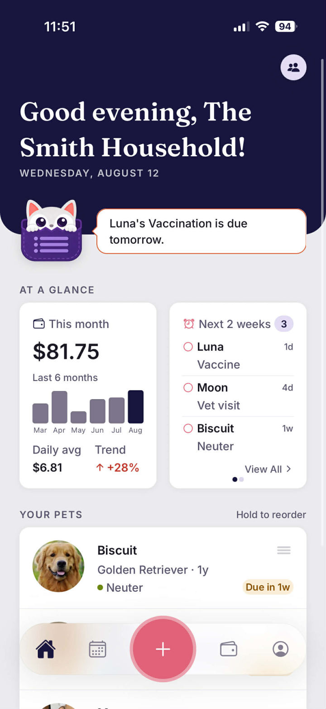
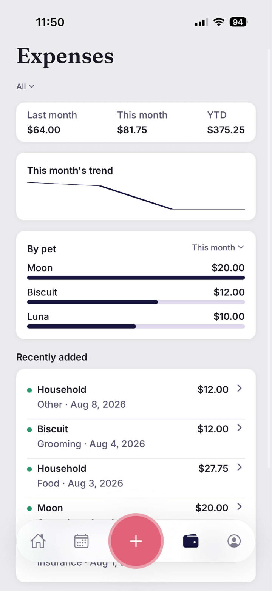
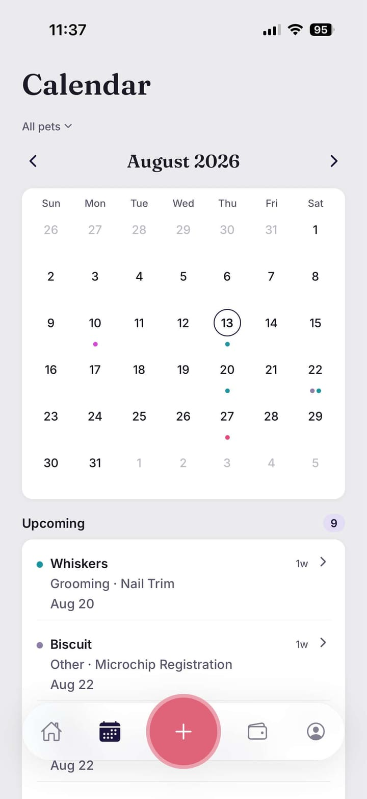
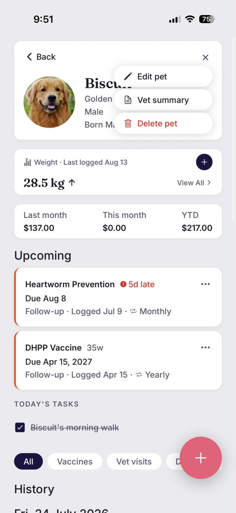
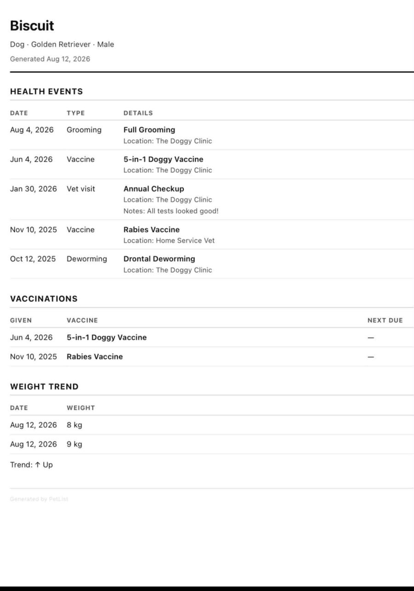

Every pet, at a glance
See every pet's status, upcoming care, and spending at a glance — all your pets, one household, one dashboard.
Every pet, organized for life. One payment, no subscriptions, ever.

What's inside
See every pet's status, upcoming care, and spending at a glance — all your pets, one household, one dashboard.

Log per-pet and household expenses, see monthly and year-to-date totals, spending trends, and a breakdown by pet.

See every logged health event and upcoming reminder laid out on a monthly calendar.

Generate a clean PDF summary of a pet's health history — vaccinations, medications, weight trend, and more — ready to share with your vet.
On the roadmap
Building for Android next. Leave your email and we'll let you know the moment it's ready.
No spam — just one email when PetList for Android launches.
